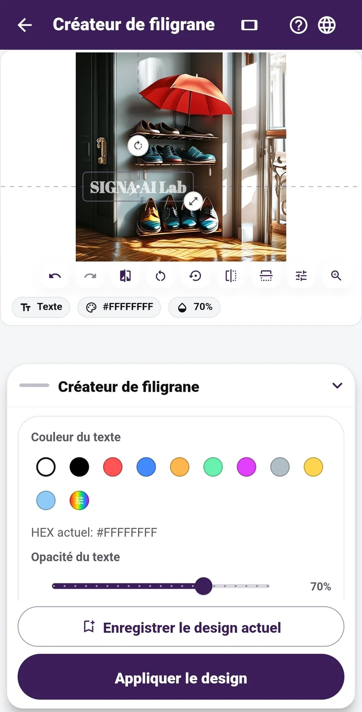

01 · PROTECT
Un filigrane qui trouve sa place,
quel que soit le cadrage.
L’éditeur s’adapte aux photos en portrait comme en paysage. Ajustez la typographie, la couleur, la taille, l’opacité et l’emplacement du texte ou du logo. Les outils essentiels sont gratuits : travaillez sur 12 photos au maximum à la fois, positionnez le filigrane sur chacune et réutilisez vos modèles enregistrés. Pro propose des polices supplémentaires à télécharger. Le signal SIGNA invisible n’est ajouté avec le filigrane visible que si vous activez cette option.
Outils de base gratuits · Portrait ou paysage · Jusqu’à 12 photos · Positionnement individuel · Modèles enregistrés · Polices Pro
Comment choisir un filigrane avant le partage ? →